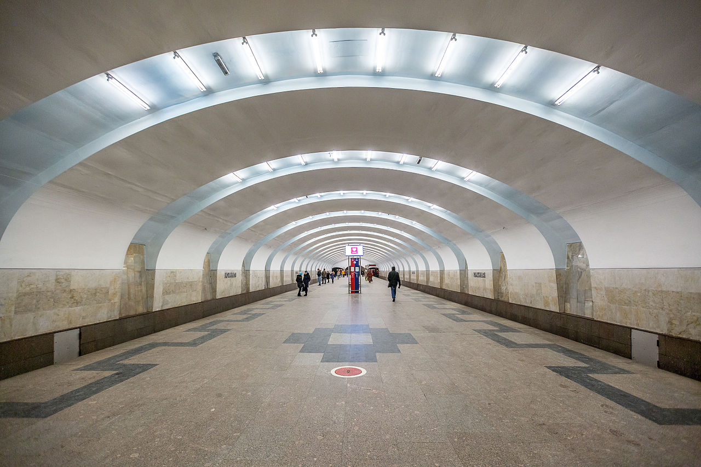

На территории района расположено две станции метро — «Чертановская» и «Южная» Серпуховско-Тимирязевской линии.
«Чертановская» — станция Серпуховско-Тимирязевской линии Московского метрополитена. Открыта в составе участка «Южная» — «Серпуховская» 8 ноября 1983 года.
За станцией от главных путей Серпуховско-Тимирязевской линии отходят ветви в обслуживающее её депо «Варшавское», однако оборотных тупиков или съездов за станцией нет. Поэтому некоторые поезда следуют из центра до «Чертановской», но не оборачиваются на станции, а направляются в депо.
Глубина заложения — 10,5 м.
На станции два ряда по 26 колонн. Колонны и путевые стены облицованы белым мрамором. Стены украшены вставками (художники М. Н. Алексеев, Л. А. Новикова) на тему «Строительство новой Москвы». На полу выложен геометрический орнамент из красного и тёмного гранита. Сооружена по индивидуальному проекту из сборного и монолитного железобетона, колонны стальные.
Стены наземного павильона заменили огромные стеклянные окна — единственная бетонная стена большого эскалаторного зала вестибюля была украшена большой мозаикой, созданной по эскизу художника И. М. Рабиновича, подготовленному в 1960—61 гг. для другого проекта, но так и не реализованному ранее. Потолки вестибюлей были отделаны металлическими поклонениями, покрытыми темным лаком. Обогрев осуществляли скрытые за декоративными решетками батареи.
Первое время после открытия станция освещалась металлогалогенными лампами. Однако спустя несколько месяцев металлогалогенные лампы были заменены на ртутные лампы типа ДРЛ, которыми станция освещается и поныне.
На станции имеются два вестибюля — надземный южный и подземный северный. Выход в город осуществляется через подземный переход на Балаклавский проспект, Чертановскую улицу и Симферопольский бульвар, через южный наземный вестибюль — на Балаклавский проспект и Чертановскую улицу.
На этой станции можно пересесть на следующие маршруты городского пассажирского транспорта:
«Южная» — станция Серпуховско-Тимирязевской линии Московского метрополитена. Открыта в составе участка «Южная» — «Серпуховская» 8 ноября 1983 года. Глубина заложения — 10 м.
Станция односводчатая. В отделке стен использован мрамор тёплых (в вестибюле) и холодных (в подземном зале) тонов. Тема архитектурно-художественного оформления — «Природа Подмосковья». На белом фоне стен выделяются мраморные вставки с рисунком, имитирующим льющуюся воду. Торцевые стены зала украшены мозаичными панно «Времена года» (художники Б. П. Неклюдов, В.Кузнецов, В.Бикейкин), гармонично сочетающимися с мраморными вставками. На полу выложен орнамент из серого и чёрного гранита. В центре подземного зала установлены скамейки для пассажиров, которые напоминают небольшие пароходики с мачтами — световыми указателями. По своду вдоль станции размещены 26 ниш с декоративными светильниками, окрашенные в небесно-голубой цвет.
Станция имеет два подземных вестибюля. На одном конце в северном вестибюле эскалаторы, на другом конце в южном вестибюле — лестница и эскалаторы. Подъёмы к ним с платформы оборудованы эскалаторами. По подземным переходам можно выйти на Сумскую, Кировоградскую и Днепропетровскую улицы.
На этой станции можно пересесть на следующие маршруты городского пассажирского транспорта: